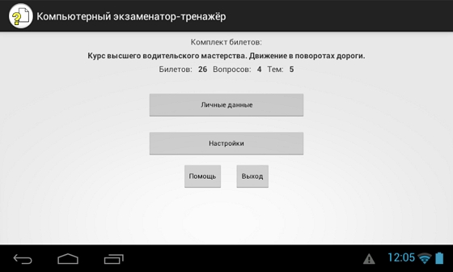
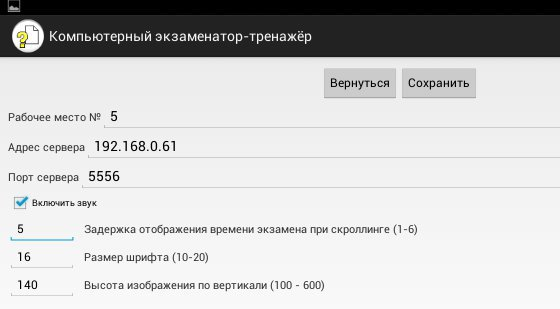
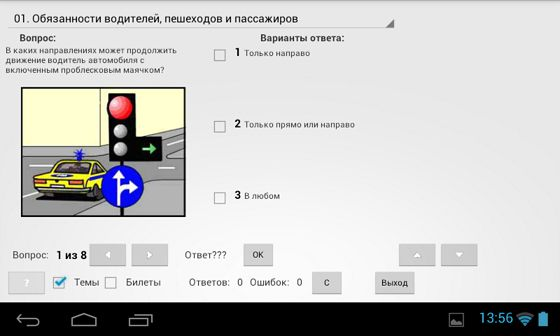
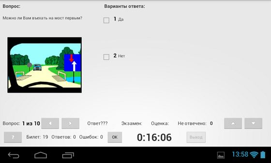
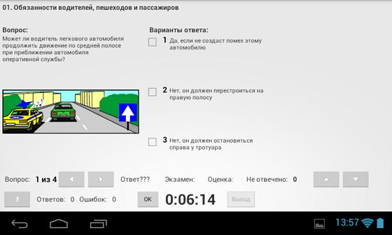
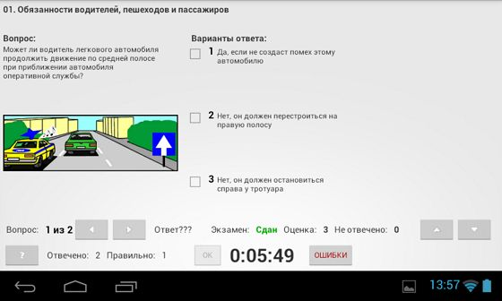

Рабочее место ученика организовано на планшете на базе операционной системы Андроид версии не ниже 4.1.

Первоначально в нижнем ряду 3 кнопки - Помощь, Старт и Выход. После подключения к серверу (кнопка Старт)
надпись на ней изменится на Выход, а третья кнопка (Выход) станет невидимой.
Первичная настройка программы Компьютерный Экзаменатор-Тренажёр (КЭТ) - далее Рабочее место ученика (РМУ) производится ТОЛЬКО преподавателем.

Перед подключением к серверу (кнопка Старт) ученику требуется ввести своё имя и фамилию. Для этого служит кнопка Личные данные. По умолчанию имя - Ученик(№ рабочего места). С помощью экранной клавиатуры, которая появляется при прикосновении к полю Имя вводится имя и, если требуется, фамилия и отчество. После сохранения данных (кнопка Сохранить) и возврата в основное окно РМУ можно нажать кнопку Старт для подключения к серверу (при этом надпись на кнопке изменится на Выход). Если сервер (РМП) не запущен, произойдёт выход из программы РМУ.
Перед подключением к серверу (РМП) убедитесь, что сервер и сеть WiFi на сервере уже работают. Планшет должен быть подключен именно к этой сети. В его настройках должна быть включена опция Оставлять WiFi при засыпании всегда. Если это не так, то при попытке подключения к серверу произойдёт выход из программы РМУ или отключение произойдёт при "засыпании" планшета.
После подключения к серверу в его списке появится это рабочее место в виде имени ученика и номера рабочего места. Преподаватель может, выбрав его в своём списке, раздать ему какой либо комплект билетов. При этом на РМУ появится название этого комплекта, число билетов в нём, число вопросов в билете и число тем в комплекте билетов.
Затем преподаватель может перевести РМУ в один из трёх режимов: Просмотр вопросов (тренировка), Экзамен по билету и Экзамен по теме.

Назначение элементов на экране Просмотр вопросов:
Вверху - выпадающий список тем. Если его коснуться, список развернётся и можно выбрать другую тему прикосновением к ней. При этом, если выбрано поле Билеты внизу экрана, выпадающий список тем исчезнет. Зато правее кнопки ОК появится поле Билет X из Y. Если снова выбрать Темы, то всё вернётся обратно.
Если в вопросе нет изображения, то вместо него будет показан серый прямоугольник.
Если же изображение очень маленькое, то простым нажатием на него изображение можно значительно увеличить (степень увеличения зависит от отношения сторон изображения). При этом перекроются поля вариантов ответа, но поле вопроса останется видимым. Для возврата изображения в первоначальное положение надо нажать на него ещё раз.
Правее изображения - поля Вариантов ответа (от 2 до 6). Прикосновением к ним можно выбрать требуемый вариант ответа. При этом в поле Ответ??? отразится номер варианта ответа. Нажатием кнопки ОК ответ заносится в память. Поле Ответов: увеличится на единицу. Если ответ ошибочный, то увеличится и значение поля Ошибок:. Второй раз ответить на этот вопрос не удастся - появится сообщение Ответ уже получен.
При правильном ответе значение поля Вопрос: X из Y будет показано зелёным цветом, при неправильном - красным. Вопросы без ответа будут показаны чёрным.
Если это не последний вопрос, программа автоматически покажет следующий.
Если нажать кнопку С, все ответы очистятся и тренировку экзамена можно повторить.
Кнопки Влево/Вправо предназначены для выбора предыдущего/следующего вопроса.
Кнопки Вверх/Вниз сдвигают текст вопроса или варианта ответа вверх или вниз.
Для этого надо предварительно коснуться текста вопроса или варианта ответа (его фон сменится на серый).
Необходимость такого сдвига вызвана тем, что текст некоторых вопросов или вариантов ответа может не поместиться
на экране планшета.
Кнопка ? в левом нижнем углу экрана служит для показа подсказки, если это разрешено преподавателем и подсказка физически присутствует в этом вопросе.
Кнопка Выход служит для выхода в стартовое окно программы РМУ.

Назначение кнопок и полей выбора при экзамене по билету такое же, как и при просмотре вопросов. Незначительно и отличие в оформлении экрана - нет выпадающего списка тем и кнопки стирания С.
В нижней строке появилось поле с номером билета и окно таймера, показывающего время, оставшееся до окончания экзамена (если разрешено преподавателем).
Если во время экзамена случайно (или не случайно) будет нажата системная кнопка Домой, то восстановить состояние экзамена можно, снова запустив программу РМУ. При этом будет потеряно несколько секунд из времени экзамена.
На время проведения экзамена кнопка Выход становится недоступной. Если преподаватель разрешил просмотр ошибок, то при их наличии после окончания экзамена эта кнопка становится кнопкой Ошибки. При её нажатии названия полей Ответов: и Ошибок: заменяются на Отвечено: и Правильно:. В просмотр ошибок попадают только те вопросы, на которые получены неверные ответы. Вопросы, на которые ответы не были получены из-за нехватки времени, в просмотр не попадают, но участвуют в расчёте оценки за экзамен.
В поле Экзамен появляется итог экзамена Сдан или Не сдан. В поле Оценка появляется результат по пятибалльной системе, если это разрешено с рабочего места преподавателя (РМП).
После подачи команды с РМП Ожидание кнопка Выход становится доступной и, нажав её, можно выйти в стартовый экран РМУ. После этого преподаватель может раздать другой комплект билетов и провести новый экзамен.

Экран экзамена по теме почти такой же, как и экзамена по билету за исключением того, что нет поля Билет:, а на верху экрана присутствует название темы. Экран просмотра ошибок тоже выглядит так же, как и после экзамена по билету.
